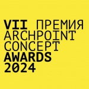

Активные конкурсы для дизайнеров
Восьмой сезон конкурса HSE CREATIVE OPEN

Международный онлайн-конкурс HSE CREATIVE OPEN на базе Школы дизайна НИУ ВШЭ открывает летний сезон с новым набором номинаций: «Визуальные исследования», «Гейм-дизайн», «Моушн-дизайн», «Плакат», «Цифровой продукт». Охватывая разные направления креативных индустрий, конкурс ставит перед собой цель собрать эффектные проекты в творческих областях и сформировать новую площадку для обмена опытом между начинающими специалистами и экспертами индустрии. Жюри каждой номинации состоит из куратора, идейного вдохновителя, и представителей разных институций и компаний-трендсеттеров, которые выбирают актуальные проекты.
VII Международная Премия ARCHPOINT CONCEPT AWARDS 2024
Archpoint Concept Awards — международная премия для архитекторов и дизайнеров, которая регулярно проводится с 2015 года. Основной критерий участия – подача исключительно концептуальных проектов, не реализованных ранее. Темой седьмого сезона премии стала «Забота о себе». Члены жюри во главе с основателем бюро Archpoint Валерием Лизуновым будут оценивать концепции велнес-клубов, спа, ретрита, салонов красоты, саун и других мест, в которых люди уделяют внимание своему здоровью, самочувствию и настроению. Эти пространства должны быть безопасными, экологичными, комфортными, эстетичными. Ключевые условия, которым должен соответствовать проект – уникальность концепции и функции, качество подачи и реализуемость.
THE ARCHITECT'S CHAIR 2

Известные архитекторы, такие как Чарльз и Рэй Имз, Людвиг Мис ван дер Роэ, Марсель Бройер и Арне Якобсен успешно разрабатывали культовые стулья, которые воплощают их авторский подход к дизайну. Вдохновленный давней традицией культовых архитекторов, создающих мебель на заказ в качестве дополнения своей архитектурной работы, конкурс приглашает архитекторов и дизайнеров исследовать новые материалы, методы конструкции и эргономические решения, создавая функциональное и эстетически привлекательное мебельное изделие. Разработав авторский стул, отражающий индивидуальный стиль и видение, архитекторы и дизайнеры могут внести вклад в непрерывный диалог между архитектурой и дизайном.
Международный конкурс «Masai mara Conservation Centre / Центр охраны природы Масаи Мара»

Центр охраны природы Национального заповедника Масаи Мара создавался как инновационное учреждение, которое призвано просвещать, вдохновлять и повышать осведомленность о сохранени местных и природы. Участникам конкурса предстоит разработать многосоставный экологичный объект архитектуры. Он должен включать в себя парковку, современное выставочное пространство, интерактивные учебные зоны, сувенирный магазин и все необходимые удобства. При создании фасадных и интерьерных решений стоит комбинировать современный стиль с отсылками к культурным традициям масаи. Члены жюри высоко оценят проекты, предполагающие использование натуральных материалов — например, дерева, камня и соломы. Еще одним критерием выступает самобытная атмосфера комплекса, которой можно добиваться самыми необычными способами. Конкурс пройдет в два этапа: сначала пять лучших концептуальных проектов будут отобраны в шорт-лист, а потом командам предстоят доработать свои идеи и защитить их перед комиссией.
Feeel Design World Prize 23-24

Feeel Design World Prize — награда для дизайнеров и творческих людей, которые воплощают в жизнь смелые дизайнерские идеи с использованием натуральных материалов. Ее получают авторы небольших серий и отдельных предметов мебели, которые не сломаются и прослужат десятилетиями, радуя глаз владельца. Организаторы предлагают выйти за рамки моды, трендов и маркетинга, чтобы вернуться к ценностям вневременного дизайна. От участников ожидается стремление сочетать функциональность, рационализм, дизайн, форму и декор в масштабных и компактных объемах, а также внимание к чувствам и комфорту будущих покупателей. Подать на рассмотрение жюри можно проекты из самых разных категорий, от интерьеров, мебели и предметов освещения до сгенерированных ИИ архитектурных концепций.